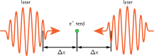
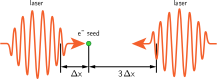
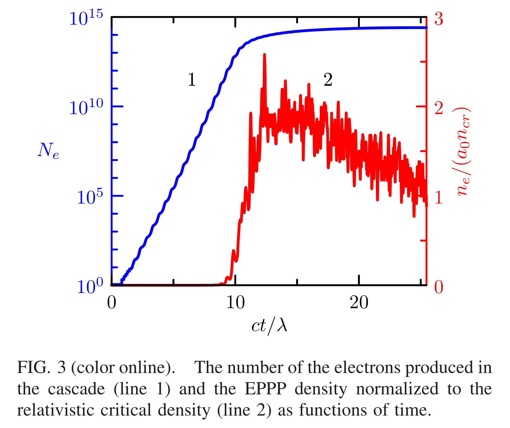
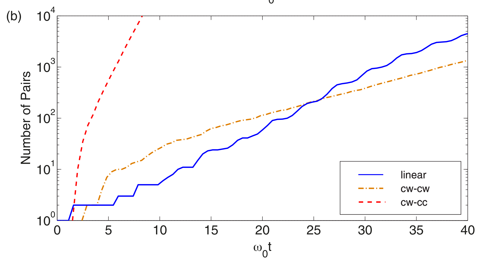
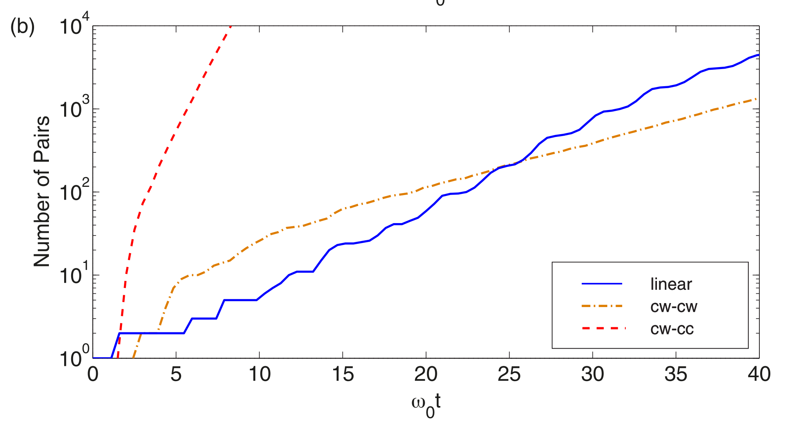

КЭД каскад в стоячей волне

Параметры моделирования: $$a_0 = 1200$$ $$\tau = 20\lambda/c$$ $$w=6 \lambda$$


Параметры моделирования: $$a_0 = 1200$$ $$\tau = 20\lambda/c$$ $$w=6 \lambda$$


E. N. Nerush et al., Phys. Rev. Lett. 106, 035001 (2011):
link
 
